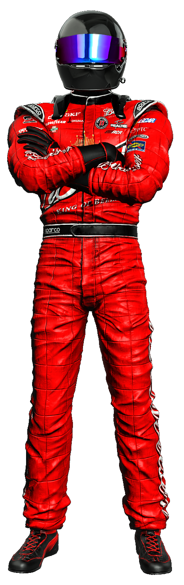

Автогонщик – спортсмен, профессинальный участник автомобильных гонок. Профессия подходит тем, кого интересует физкультура и ОБЖ. В 2020 году центр профориентации ПрофГид разработал точный тест на профориентацию. Он сам расскажет вам, какие профессии вам подходят, даст заключение о вашем типе личности и интеллекте.
Автогонки – это зрелищный спорт. Гонщик управляет специальным, произведённым на заказ, гоночным автомобилем. Каждый такой автомобиль эксклюзивен, совершенен, великолепен. Автогонщик по своим профессиональным качествам должен соответствовать этому чуду техники и инженерной мысли.
От того, насколько гонщик чувствует свой автомобиль и сливается с ним в едином порыве, зависит успех соревнований. Управление автомобилем — это определенная координация движений, у гонщика она опережает сознание. Это должны быть автоматические реакции, которые нарабатываются множеством повторений, зависят от опыта. Гонщик достаточно много времени уделяет тренировкам, поэтому, когда он участвует в соревнованиях в режиме реального времени, какие-то вещи у него получаются автоматически.
Автогонщик ведет серьезную подготовку к соревнованиям задолго до их начала. В его задачи входит: изучение топографии трассы, ведение гонки соответственно рельефу трассы; эксплуатация и управление гоночным автомобилем; теоретическая разработка эффективных маневров на трассе перед гонкой совместно с тренером или самостоятельно при прохождении трассы; оценка возможностей транспортного средства и участие в его усовершенствовании; регулярные тренировки при подготовке к гонке; психологическая подготовка к гонке.
Плюсы
Престижность, азарт, для любителей экстрима - невероятный выброс адреналина. Гонщиков называют адреналиновыми наркоманами.
Минусы
Опасность и серьезный риск, колоссальная ответственность. За автогонщиком стоят спонсоры, механики, целая команда, благодаря которой становится возможным участие в гонках. Груз ответственности перед ними очень сильно давит.
Автогонщик - это не столько профессия, сколько призвание. Пилот автомобиля, автогонщик, ничего не получает, кроме уважения и восхищения людей, которые за него болеют. И кубка, который стоит несколько сотен рублей. Есть суперпрофессиональные пилоты, их единицы в России, которые за свой труд получают деньги. Но в российском кольцевом спорте их не наберется и пяти человек. Подавляющее же большинство гонщиков делают это ради собственного удовольствия, вкладывают свои деньги в гонки. Наиболее талантливые, опытные, профессиональные находят возможность привлекать чужие деньги (деньги спонсоров). Как правило, автогонщики зарабатывают на жизнь в сфере, косвенно связанной с гонками – это может быть автомобильная журналистика, тренерская и инструкторская работа, подготовка автомобильных презентаций и т.п.
Виды автомобильных соревнований можно классифицировать по типам трасс, на которых проводятся состязания, по особенностям гоночной техники, по особенностям спортивного регламента и т. д.
От вида гонок зависит состав экипажа машины. Например в гонке на болиде по кольцу гонщик управляет машиной самостоятельно. А в галли экипаж машины состоит из двух человек: первый пилот – это водитель, второй пилот – это штурман.